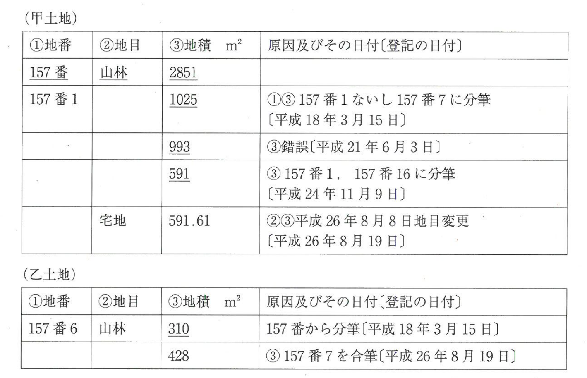

問題文・条件
次のような登記事項の記録（抜粋）がある甲土地及び乙土地に関する。なお、甲土地及び乙土地は、その地番区域及び所有権の登記名義人が同一であり、また、いずれも乙区に記録されている事項はないものとする。
肢 ア
H26-6-ア
甲土地について錯誤による地積の更正の登記が平成21年6月3日にされたことによっても、平成18年3月15日にされた分筆の登記において登記所に備え付けられた地積測量図は閉鎖されない。

〔図〕
解答：○
地積の更正で新しい地積測量図が付いても、分筆のときの図面は閉鎖されない。
地積測量図が閉鎖されるのは、その土地について新たに分筆や更正で図面が備え付けられた場合のうち、規則85条が定める場合に限られる。更正の登記では従前の分筆の図面は閉鎖されない。
出典：法務省 平成26年度 土地家屋調査士試験を加工して作成
肢 イ
H26-6-イ
甲土地について分筆の登記が平成24年11月9日にされたことにより、平成21年6月3日にされた錯誤による地積の更正の登記において登記所に備え付けられた地積測量図は閉鎖される。
〔図〕
解答：×
分筆しても、更正の登記の図面は閉鎖されない。
分筆の登記で閉鎖されるのは、分筆前の土地の地積測量図のうち規則85条1項が挙げるもの。錯誤による更正の図面は対象でない。
出典：法務省 平成26年度 土地家屋調査士試験を加工して作成
肢 ウ
H26-6-ウ
乙土地について合筆の登記が平成26年8月19日にされたことにより、平成18年3月15日にされた分筆の登記において登記所に備え付けられた地積測量図は閉鎖される。
〔図〕
解答：×
合筆では地積測量図は閉鎖されない。
合筆の登記の申請には地積測量図を要しない。合筆で従前の図面が閉鎖されるとする定めはない。
出典：法務省 平成26年度 土地家屋調査士試験を加工して作成
肢 エ
H26-6-エ
甲土地及び乙土地が相互に接続している場合であっても、甲土地を乙土地に合筆する合筆の登記を申請することはできない。
〔図〕
解答：○
地目が違う土地は合筆できない。
甲土地は平成26年8月8日に宅地へ地目変更され、乙土地は山林のまま。地目が相互に異なる土地の合筆はできない（法41条2号）。
根拠法41条2号
出典：法務省 平成26年度 土地家屋調査士試験を加工して作成
肢 オ
H26-6-オ
甲土地について地目の変更の登記が平成26年8月19日にされた際に、甲土地の所有権の登記名義人に対し、当該地目の変更の登記に係る登記識別情報が通知されている。
〔図〕
解答：×
表示に関する登記では登記識別情報は通知されない。
登記識別情報が通知されるのは、申請人自らが登記名義人となる権利に関する登記をしたとき（法21条）。地目の変更の登記では通知されない。
根拠法21条
出典：法務省 平成26年度 土地家屋調査士試験を加工して作成